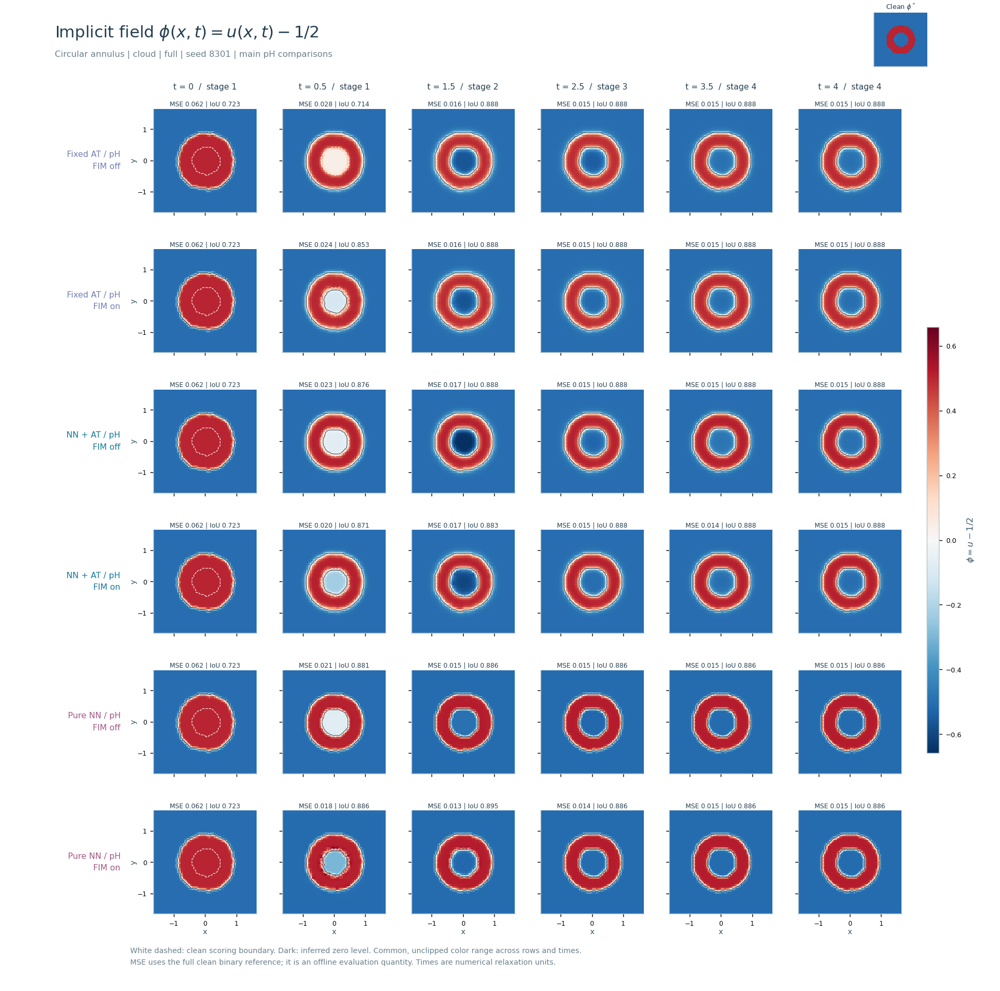
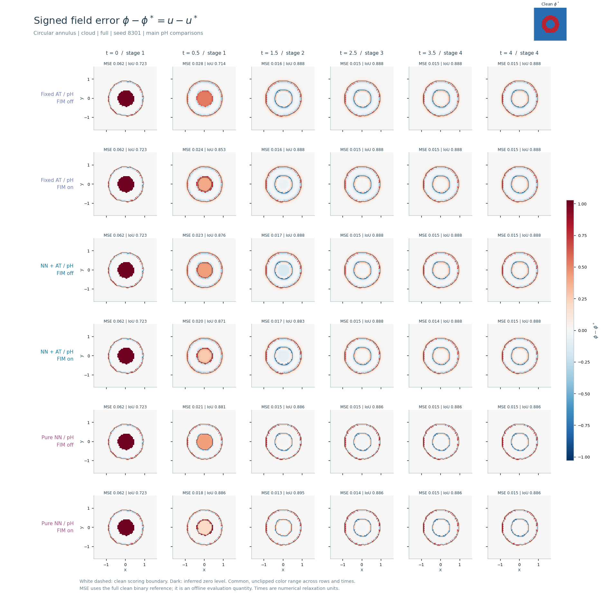
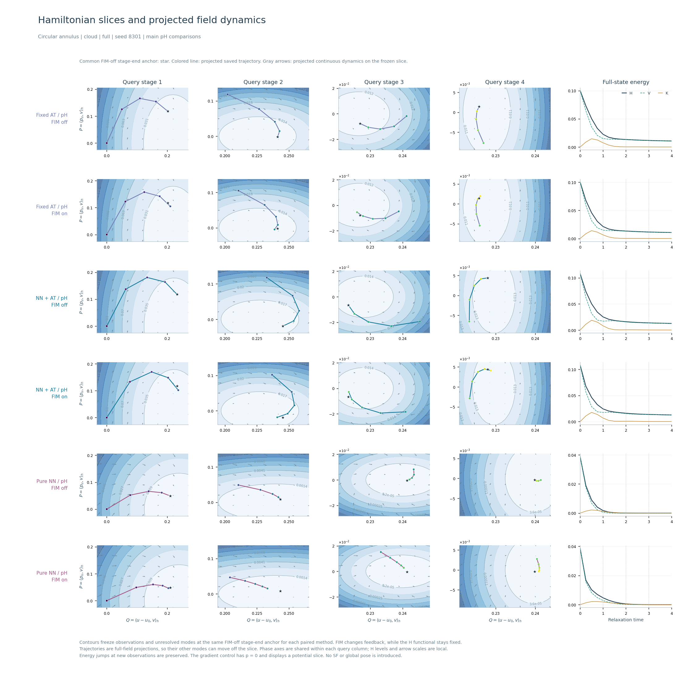
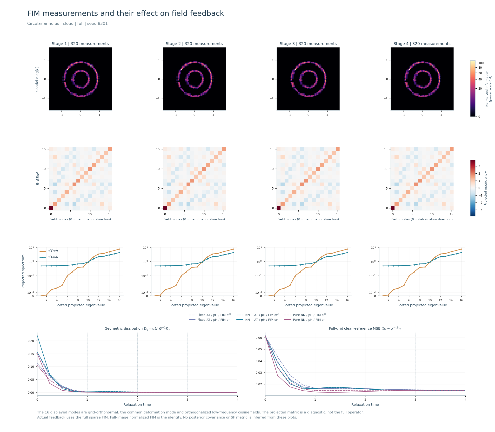

Circular annulus
Noisy boundary cloud · Full observation · Seed 8301


Implicit field over time
Six saved states show the inferred level function, with the clean boundary overlaid.



Signed field difference
Red marks overestimation of the clean binary reference. Blue marks underestimation.



Hamiltonian and phase trajectories
Each query stage has a frozen energy slice and an overlay of the saved field and momentum projections.



Fisher information and feedback
Spatial FIM maps, projected spectra, and dissipation traces track the measurement stages.